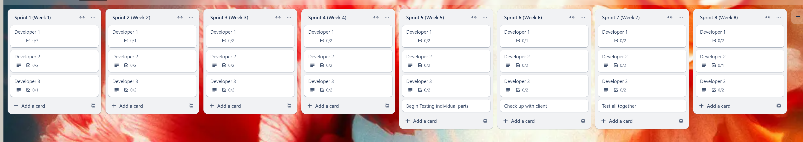

Advanced Programming
Ben Powell
2204331
I decided to use trello to set up the plans. I set up different sections for each week sprint, and set up a checklist for each developer. Next i need to look at the tasks and break down the different requirements into tasks and figure out who does what.
With the tasks figured out for each sections, then assigning when they should be done and other tasks like testing. Ive set out the trello board into sprints with a section for each developer. So that a developer could go to their section in the week it is, and figure out what their tasks were. There were some design tasks that would need to be done, so i assigned that work to whoever didnt have anything to do that week.

The practise on creating a plan for a project using sprints was useful to see how extensive planning can make it easier for someone to complete a task.
In the future i will probably research the best way to layout a trello board for this type of task, as the way i have done it, is probably not the most straightforward to use.
Perhaps more details on the task could be good as well but its hard to think of all the different parts without sitting and figuring it out with the client.